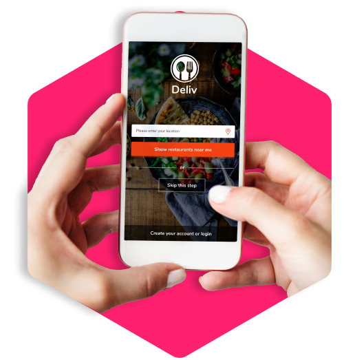

Deliv
Deliv is a food delivery app on Android that aggregates restaurants who have an existing delivery service and connects them with customers who are looking for a reliable delivery service.
With the growth of delivery apps; it has become more apparent that the demand for a delivery service that has a comprehensive list of restaurants that have great reviews, reliable delivery times, and real photos of the products.
Practices
Product design, Experience design, Visual design, Prototyping, Branding
Methods & Tools
Secondary research, Ideation, Adobe XD
Role
UX/UI Designer
Date
Mar 2020 - Apr 2020